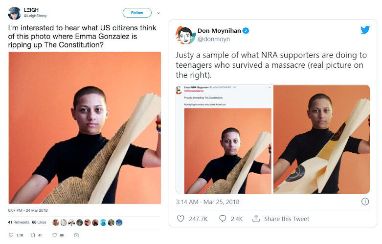
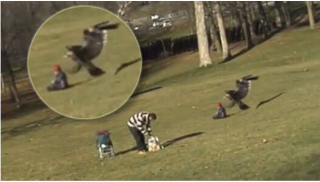
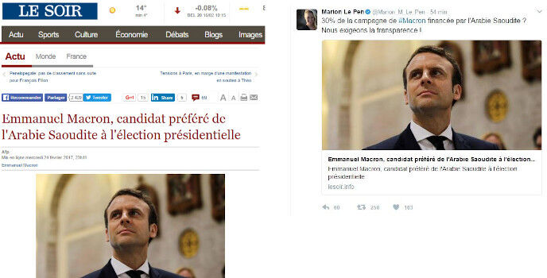
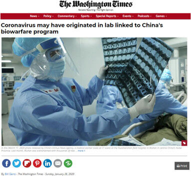
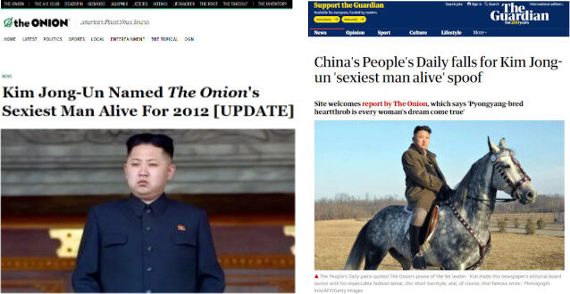
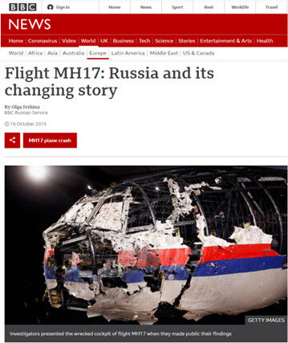

За полазнике
За тренере
За полазнике
За тренере
Модул 2: Информацијски поремећај
Опис модула
Основна улога овог модула је да представи концептуални оквир информацијског поремећаја, како би полазници оснажили своје способности препознавања и разликовања различитих категоријa и врстa информацијских поремећаја, и приступили им аналитички и критички.
Секундарни циљ је да усмери тренере који желе да користе садржај овог модула за обуку полазника.
Са овим циљевима, представљене су дефиниције главних категорија и уобичајених типова информацијских поремећаја, као и смернице о томе како обрадити ову тему.
Полазници који успешно заврше овај модул моћи ће да:
- препознају информацијски поремећај
- дефинишу, идентификују и разликују главне категорије информацијског поремећаја (попут мисинформације, дезинформације и злонамерне информације)
- дефинишу, идентификују и разликују уобичајене типове информацијских поремећаја (као што су манипулисани садржај, садржај под лажним именом, измишљени садржај)
Поред тога, тренери који успешно заврше овај модул, моћи ће са већим разумевањем да подучавају појам информацијског поремећаја.
Структура модула
Овај модул се састоји из следећих целина:
- Опис модула (циљеви, опис садржаја и исходи учења)
- Структура модула
- Смернице за полазнике
- Смернице за тренере (како се припремити, методе које треба користити и савети за тренере)
- Садржај (материјал за учење и вежбање)
- Квиз
- Референце (цитирани извори, препоручени извори и видео записи)
Главни циљеви модула, опис садржаја и исходи учења објашњени су у делу Опис модула. Садржај обухвата све материјале за учење и вежбања везана за садржај. Квиз укључује питања са вишеструким избором како би полазници тестирали свој напредак. Одељак Референце обухвата списак извора цитираних у садржају модула и листу додатних извора и видео записа који се препоручују за читање и гледање како би се проширило знање о овој теми. Смернице за полазнике укључују упутства и сугестије за полазнике. Смернице за тренере воде тренере кроз различите фазе обуке и дају савете који би могли да буду корисни током предавања предмета.
Смернице за полазнике
Од полазника се очекује да прочитају текст, пажљиво проуче дате примере, погледају препоручене видео-записе и ураде вежбања. Они могу да консултују предложене ресурсе за додатне информације. Након проучавања садржаја, полазницима се препоручује да ураде квиз како би проценили свој напредак. Они могу поново проучити материјал за учење када и уколико је потребно.
Смернице за тренере
Смернице за тренере укључују сугестије и савете за тренере о томе како да користе садржај овог модула за обуку полазника о информацијском поремећају.
Припрема
Припремите презентацију (Пауерпоинт/Прези/Канва) која је обогаћена визуелним материјалима (слике и видео-клипови) и јасним примерима. Примере и вежбања у овом модулу прилагодите темама које су познатије конкретној циљној групи. Одабир локалних примера (специфичних за земљу) у вези са актуелним или добро познатим питањима помаже да се суштина јасније илуструје и додатно скрене пажња полазницима. Што су примери познатији и популарнији, то ће порука бити боље пренета. Локалне (националне) платформе за проверу чињеница могу бити добар извор за широк спектар вести/студија случаја који су већ верификовани и означени.
Почетак
Како бисте увели полазнике у тему, на почетку можете користити кратак квиз (3 до 5 питања) направљен у Кахуту или им поставити питања путем Ментиметар апликације. Поменути квиз и питалице се могу користити као мотивационо средство и средство за проверу постојећег знања полазника о овој теми. Питања, на пример, могу бити: Шта је дезинформисање? Шта је мисинформисање? Шта је садржај под лажним именом?
Методологија
Током обуке могу се комбиновати различите наставне методе:
- Предавања
- Дискусије
- Рад у групама
- Самопроцењивање
Савети за тренере
Загревање
Ефикасан начин укључивања полазника и утврђивања заједничких очекивања о томе шта ће научити јесте постављање неколико прелиминарних питања о овој теми (информацијски поремећај) и категоризација (разврставање) њихових одговора. Ово се може урадити кроз групни рад тако што ћете замолити полазнике да дискутују и прикупе идеје, али и индивидуални рад тако што ћете замолити сваког полазника да напише своје идеје на самолепљивим папирићима. Активност се може спровести на следећи начин:
- Замолите полазнике да наведу примере информацијских поремећаја
- Позовите полазнике да разврстају дате примере и објасне у чему се разликују
- Позовите полазнике да идентификују теме дезинформација (као што су политика, економија, здравство, технологија, социјална давања, забава и познате личности, итд.
- Питајте полазнике где наилазе на дезинформације и у ком облику (видео-записи, чланци, постови, итд.)
- Питајте полазнике како разликују нетачне информације
- Питајте полазнике шта мисле колико често наилазе на дезинформације
Након дискусије, уверите се да полазници могу да разликују намерно и ненамерно ширење лажних информација (разлика између дезинформисања и мисинформисања). Полазници би такође требало да схвате да ниво њихове неистинитости, другим речима фактичност (степен у коме се лажне вести ослањају на чињенице), може варирати.
Представљање циља лекције
Циљ лекције треба да буде јасан (концептуализaција дезинфорација као феномена који утиче на наше животе и доношење одлука и промишљање о његовој природи). Након питања за загревање, лакше ћете разјаснити циљеве.
Представљање садржаја лекције
Приликом представљања садржаја, водите рачуна о интеракцији са полазницима и подстакните их на активно учешће.
- Пре него што дате дефиницију дезинформација, замолите учеснике да oсмисле своју.
- Када представљате уобичајене врсте информацијског поремећаја, замолите учеснике да дају примере из стварног живота. Коментаришите примере и да ли они припадају категорији о којој говорите.
- Када дајете примере, изаберите примере из стварног света и сазнајте што више информација о конкретном случају који износите како бисте полазницима пружили више детаља уколико вас питају.
- Када бирате примере, уверите се да они у потпуности одговарају дефиницији категорије коју тада обрађујете. Поједини примери могу да се сврстају у више од једне категорије, што може бити збуњујуће за почетнике.
- Када бирате примере са друштвених медија, обавезно представите оригиналну објаву са лајковима и поновним дељењима како бисте могли да демонстрирате величину ефекта.
- Наведите неке примере са детаљним информацијама (ако нису примери из стварног света, то би могли бити и неки сценарији) и замолите учеснике да одлуче о којој врсти информацијског поремећаја се ради.
- Када представите све различите врсте информацијског поремећаја замолите учеснике да све ове различите врсте разврстају у три главне категорије (мисинформисање, дезинформисање, злонамерно информисање). Погледајте пример који следи.

Извор: Humprecht, Esserl & Van Aelst, 2020, стр. 495
Закључак
Направите кратак резиме лекције и поставите неколико питања која ће помоћи да истакнете најважније поруке које желите да пренесете. Следећа питања могу помоћи:
- Замолите полазнике да опишу информацију на коју су наишли на мрежи и која је у почетку изгледала као истинита, али се касније испоставило да је лажна.
- Питајте полазнике да ли су икада поделили лажне информације и касније то схватили.
- Питајте полазнике у којој мери мисле да су погођени ширењем мисинформација.
- Питајте полазнике за мишљење: ако неко несвесно шири лажне информације, да ли та особа сноси исту одговорност за последице као неко ко намерно шири дезинформације.
Садржај: Информацијски поремећај
Увод
Како термин “лажне вести” не обухвата сав обмањујући садржај (поједини садржај чак није ни лажан), уведен је нови концепт који је назван “информацијски поремећај”. Информацијски поремећај је веома комплексан феномен. Поједини типови овог феномена су мање штетни и могу се описати као информационо загађење ниског нивоа, док су други софистициранији и дубоко обмањујући (Wardle & Derakhshan, 2017, стр. 20; Wardle, 2019, p. 57; Wardle, 2020).
Категоризација “информацијских поремећаја” помаже бољем разумевању данашњег информационог пејзажа. У овом модулу су представљене главне категорије и различити типови информацијског поремећаја.
Главне категорије информацијског поремећаја
Постоје три главне категорије информацијског поремећаја, а то су мисинфорисање, дезинформисање и злонамерно информисање. Разлике између ове три категорије су дефинисане обимом штете и неистинитости (Wardle & Derakhshan, 2017, стр. 20; Wardle, 2020). Важно је разликовати истините вести од лажних, и вести које се креирају, производе и/или дистрибуирају са лошом намером (Wardle & Derakhshan, 2017, стр. 20).

Извор: Wardle, 2019, стр. 9
Дезинформисање (енг. Disinformation)
Дезинформацијa je садржај који је намерно лажан и који се дели како би се нанела штета (Wardle, 2019, стр. 8; Wardle & Derakhshan, 2017, стр. 20). Измишљен или намерно манипулисан/измењен аудио-визуелни запис, намерно креиране теорије завере или гласине су неки од примера који припадају овој категорији (Staats, 2021).
Пример: Да ли је Емануел Макрон отворио офшор банкарски рачун?
Уочи председничких избора у Француској 2017. године, друштвеним мрежама се проширила гласина да Емануел Макрон (тадашњи кандидат) има тајни офшор банкарски рачун на Бахамима. Доказано је да су документа која су кружила интернетом, као што је уговор са банком (укључујући Макронов потпис и контакт информације банке) била лажна. Циљ ове разоткривене вести био је да обесхрабри француске бираче да гласају за Макрона (CrossCheck, May 5, 2017; Wardle & Derakhshan, 2017, стр. 21).

Извор: CrossCheck, May 5, 2017
Мисинформисање (енг. Misinformation)
Мисинформисање је дељење лажних информација без намере да се учини било каква штета. Када дезинформацију подели особа која не схвата да је лажна или обмањујућа, она се претвара у мисинформацију (Wardle & Derakhshan, 2017, стр. 20; Wardle, 2019, p. 8). Ненамерне грешке попут нетачних натписа на фотографијама, датумa, статистика, превода се такође сврставају у ову категорију. Када се схвати озбиљно, чак и сатира постаје мисинформација (Staats, 2021).
Пример: Да ли су муслимани у Лондону “прославили” терористички напад у Паризу?
Непосредно пре француских председничких избора 2017. године, борац ИСИС-а је пуцао на три француска полицајца и туристу на Јелисејским пољима. Један полицајац је погинуо, а остали су тешко рањени. Овај напад у Паризу инспирисао је велику количину мисинформација, као што је случај у готово свим ванредним вестима (CrossCheck, April 22, 2017; Wardle & Derakhshan, 2017, стр. 21).
Дан након несрећног догађаја, Пол Голдинг (вођа екстремно десничарске британске политичке организације) је на Твитеру поставио видео-запис уз тврдњу да муслимани у Лондону славе терористички напад. У ствари, тај видео је постављен на Јутјуб 2009. године и приказује групу Пакистанаца како славе победу Пакистана у крикет мечу у Лондону. Тврдња је била лажна (у питању је била дезинформација) и потом је обрисана. Међутим, ретвитована је 753 пута пре него што је обрисана и претворена у мисинформацију (CrossCheck, April 22, 2017).
Људи који деле ову врсту садржаја ретко то чине да би нанели штету. Уместо тога, они или покушавају да буду од помоћи или делују подстакнути емоцијама као што су бес или страх, не успевајући да провере и критички процене информације које деле (Wardle & Derakhshan, 2017, стр. 21).

Извор: CrossCheck, April 22, 2017
Злонамерно информисање (енг. Malinformation)
Злонамерно информисање је дељење истинскe, веродостојне информацијe да би се нанела штета, тако што се информације које је требало да остану у сфери приватног пребацују у јавну сферу (Wardle & Derakhshan, 2017, стр. 20). Другим речима, то је намерно објављивање приватних информација ради личног или корпоративног интереса (Staats, 2021). Овај термин такође дефинише (означава) злонамерно (малициозно) изобличавање правих информација (као што су контекст, датум или време) пре него што се поделе (Wardle, 2019, стр. 8).
Пример: цурење имејлова осмишљено да нанесе штету председничкој кампањи Хилари Клинтон
Имејл налог Џона Подесте, шефа председничке кампање Хилари Клинтон, хакован је 2016. године, а његове мејлове је објавио Викиликс. Подеста је одбио да потврди или демантује аутентичност имејлова, сугеришући да би неки могли бити лажирани, међутим ниједну преписку није означио као лажну. Накнадна истрага коју су спровеле америчке обавештајне агенције није пријавила постојање "очигледног фалсификата". Већина имејлова одражавала је уобичајену комуникацију у вези са кампањом и није открила недолично понашање, међутим овај догађај је дао увид у унутрашње функционисање председничке кампање (Podesta emails, 2021; Wardle, 2019, стр. 8).

Уобичајени типови информацијског поремећаја
Унутар три свеобухватне категорије које су горе поменуте, постоје различити типови информацијских поремећаја који доприносе разумевању комплексности овог екосистема (Wardle, 2019, стр. 12; Groundview, 2018; Turcilo & Obrenovic, 2020; Tandoc, Lim & Ling, 2018).

Извор: Groundview, 2018
Манипулисани садржај (енг. Manipulated Content)
Манипулисани садржај настаје када се прави садржај мења или на неки начин преправља. Термин описује измену неког аспекта правог садржаја, често фотографија или видео записа, и то ради обмане (Wardle, 2019, стр. 46; Wardle, 2020).
Измена слика је постала уобичајена пракса са напретком дигиталних технологија и моћних софтвера за обраду слика. Ефекти могу варирати од једноставних до сложених. Једноставне корекције могу укључивати повећање засићености боја и уклањање мањих елемената. Инванзивније промене могу да обухватају уклањање или уметање елемената у слику (Tandoc, Lim & Ling, 2018, стр. 144). Ово је моћна тактика, јер је заснована на оригиналном садржају (Wardle, 2019, стр. 46; Wardle, 2020).
Пример: Да ли је Ема Гонзалес поцепала Устав САД напола?
Мета манипулисаног садржаја који је привукао доста пажње били су ученици средње школе Еми Гонзалес и троје њених вршњака који су преживели пуцњаву у школи на Флориди. Они су фотографисани за насловну страну часописа Teen Vogue, а часопис је направио и видео који је објављен на Твитеру, у којем Гонзалес цепа мету за пуцање напола. Овај видео је измењен тако да се чинило да Гонзалес цепа Устав САД напола и досегао је до више хиљада људи (Wardle, 2019, стр. 47).

Извор: Ansari, March 25, 2018
Измишљен садржај (енг. Fabricated Content)
Ова категорија описује садржај који нема чињеничну основу и који је у потпуности измишљен (Wardle, 2019, стр. 52; Wardle, 2020; Tandoc, Lim & Ling, 2018, стр. 143).
Пример: Да ли је орао покушао да уграби бебу у парку у Канади?
На видео снимку који је 2012. године објављен на Јутјубу (аутор: MrNuclearCat) види се како се орао обрушава, граби бебу са земље, а затим је испушта неколико секунди касније. Добио је преко 2,7 милиона прегледа за два дана и преко 45 милиона прегледа пре него што je обелодањено да су видео креирала три студента дизајна једног колеџа у Монтреалу као део задатка да направе садржај који би успешно могао да превари гледаоце (Wardle, 2019, стр. 53). И орао и беба су креирани као 3Д анимација и накнадно интегрисани у филм (Stanglin, December, 19, 2012).

Извор: Stanglin, December, 19, 2012
Дипфејк (енг. Deepfakes)
Дипфејк је још један пример измишљеног садржаја. Користи се за креирање видео-записа у којем се лице и глас особе дигитално мењају тако да особа изгледа као неко други, говори или ради ствари које никада није урадила (Wardle, 2019, стр. 52; Wardle, 2020). Дипфејк користи моћне технике попут машинског учења и вештачке интелигенције за манипулацију или генерисање визуелног и аудио садржаја са великим потенцијалом за обману (Deepfake, 2021).

Извор: Deepfake, 2021
Пример: Дипфејк Владимира Путина
Дипфејк руског председника Владимира Путина креирала је нестраначка (непристрасна) група за заступање (заговарање) да покаже колико је демократија крхка (Deepfake, 2021). Овај видео је укључивао завршни коментар у којем се истиче да снимак није стваран, али то не мора да буде случај са свим дипфејковима.
Обмањујући садржај (енг. Misleading Content)
Обмањујућа употреба информација није нова појава и одувек је представљала проблем како у новинарству тако и у политици. Може се јавити у многим облицима, као што је одабир делимичног сегмента из цитата који подржава поенту, креирање статистичких података који подржавају одређену тврдњу, одлука да се нешто не пренесе јер поткопава аргумент или исецање фотографије да би се догађај представио на посебан начин (Wardle, 2019, стр. 24; Wardle, 2020).
Пример: Да ли је Унеско уклонио место рођења Исуса са своје листе баштине?
Једна Фејсбук објава тврдила је да је Унеско (UNESCO) уклонио Цркву рођења Христовог, званично признату као место рођења Исуса Христа, са своје листе светске баштине. Унеско је 2012. године уврстио ову локацију на своју листу угрожене светске баштине јер је била оштећена због цурења воде. Црква је уклоњена са листе “угрожене светске баштине” захваљујући опсежним рестаураторским радовима изведеним у 2019. години. Снимак екрана у овој Фејсбук објави је преправљен како би се сакриле последње две речи у стварном наслову: “у опасности”. Обмањујућа измишљена верзија која је постала вирална изазвала је велики гнев (Get Smart About News, May 4, 2021).

Нетачан контекст (енг. False Context)
Овим појмом се описује садржај који је оригиналан, али je преформулисан и дељен са лажним контекстуалним информацијама. То се често дешава током извештавања о ванредним вестима када се старе слике поново деле, али се такође дешава када се стари новински чланци поново деле као нови, јер се наслов и даље потенцијално уклапа у актуелна дешавања (Wardle, 2019, стр. 28; Wardle, 2020).
Пример: Да ли су демонстранти против глобалног загревања оставили гомиле отпада у Хајд парку?
У априлу 2019. године, корисници друштвених мрежа су почели да деле слике на којима се наводно виде гомиле смећа у лондонском Хајд парку. Многи од ових постова су тврдили да је отпад остављен након протеста због глобалног загревања који је организовала група “Extinction Rebellion”. Заправо, ниједна од ових фотографија не приказује стање након протеста због глобалног загревања. Слика десно је настала у Мумбају у Индији. Слика са леве стране заиста показује смеће у Хајд парку, међутим слика је настала након другог догађаја, а не протеста због глобалног загревања (Evon, April 23, 2019).

Извор: Evon, April 23, 2019
Лажно повезивање (енг. False Connection)
То је техника која се зове прикупљање кликова (енг. clickbait), а користи се за привлачење пажње и подстицање кликова кроз прилично обмањујуће и сензационалистичке наслове, визуелне приказе или натписе (Wardle, 2019, стр. 20; Wardle, 2020). Онлине вести су данас често мотивисане трком за бројем приказаних страна и као резултат тога постоји експанзија наслова за прикупљање кликова (Chen, Conroy & Rubin 2015). Иако је штета минимална, она негативно утиче на поверење људи, однос према вестима и стога се сматра обликом информацијског поремећаја (Wardle, 2019, стр. 20; Wardle, 2020).
Пример: Да ли желите да купите кућу за 1 фунту у италијанском граду у коме нема ковид-19 вируса?
Ко не би желео да купи кућу у Италији за само 1 фунту? Многи људи могу да кликну на овај линк из чисте радозналости. Када кликну, сазнају да уз накнаду од једне фунте, постоје хиљаде фунти које морају да плате за обавезно реновирање ових напуштених кућа, годишњу накнаду за осигурање, као и казну уколико купац не реновира кућу у предвиђеном року (The Sun: McGuire, June 11, 2020; Saavedra, 2020).

Подметнути садржај (енг. Imposter Content)
Овај тип садржаја описује лажно представљање оригиналних (аутентичних) извора. На пример, логотип познатог бренда или познато име се користи поред лажног садржаја. Један од најмоћнијих начина на који људи процењују садржај је по томе да ли га је створила организација или особа коју већ познају и којој верују. Додавање логотипа поуздане новинске организације или имена познате личности или новинара новинској причи (текст, фотографија или видео) повећава шансе да ће људи веровати садржају без проверавања (Wardle, 2019, стр. 34; Wardle, 2020).
Пример: Да ли је Макронову кампању за председника Француске финансирала Саудијска Арабија?
Године 2017. појавила се лажна (преварантска) верзија белгијских новина Le Soirу којима се тврдило да Макрона финансира Саудијска Арабија. Сајт клона (који је касније уклоњен) био је посебно софистициран, јер не само да је користио потпуно исти фонт, дизајн и изглед странице као оригинални сајт новина, већ су и сви његови линкови усмеравали кориснике на прави сајт Le Soirу. Званични веб-сајт новина Le Soirу је брзо демантовао да је прича дошла из њихове редакције (CrossCheck, March 2, 2017).
Ову вест са лажног сајта је на Твитеру поделила Марион Марешал-Ле Пен, француска припадница парламента и рођака председничке кандидаткиње крајње деснице Марин Ле Пен (Макронова ривалка). Марион Марешал-Ле Пен је избрисала свој твит пола сата након што је објављен (CrossCheck, March 2, 2017).

Извор: CrossCheck, March 2, 2017
Теорије завера (енг. Conspiracy Theories)
Теорија завере се такође може додати на листу информацијских поремећаја. Теорије завере покушавају да објасне значајна дешавања и околности као злонамерне поступке тајних и моћних људи и група (Douglas, 2021, стр. 270). Оне нису поткрепљене доказима који могу да издрже провере, али ово не спречава људе да верују у ове теорије (Lewandowsky & Cook, 2020, стр. 3). На пример, преко једне трећине Американаца верује да је глобално загревање превара, а више од половине верује да Ли Харви Освалд није деловао сам приликом убиства Џона Ф. Кенедија (Douglas, Sutton & Cichocka, 2017, стр. 538).
Са избијањем глобалне пандемије, велики број неоснованих и неутемељених завера, као и недоказивих тврдњи о алтернативним ковид-19 третманима без било каквих медицинских доказа су се брзо прошириле друштвеним мрежама (Canales, 2020).
Пример: Да ли је корона вирус настао у лабораторији повезаној са кинеским програмом биолошког ратовања?
У Вашингтон тајмсу 26. јануара 2020. године објављен је новински чланак у којем се тврдило да је корона вирус можда настао у лабораторији у Кини. Након што су научници демантовали ову тврдњу, уредник Вашингтон тајмса је 25. марта 2020. године објавио белешку у којој објашњава да су научници ван Кине имали прилику да проучавају вирус САРС-ЦоВ-2 и да су закључили да он не показује знаке да је произведен или намерно измењен у лабораторији, иако је његово тачно порекло још увек нејасно, а стручњаци расправљају да ли је можда процурио из кинеске лабораторије која га је проучавала (Gertz, January 26, 2020). Док оповргава оригиналну теорију завере, (уредниково) објашњење оставља дискусију отвореном за друге теорије завере.

Извор: Gertz, January 26, 2020
Сатира и пародија вести (енг. News Satire аnd News Parody)
Сатира и пародија вести се обично не укључују у типологију информацијских поремећаја зато што немају намеру да доведу у заблуду или нанесу штету, међутим имају потенцијал да преваре људе. У процесу дељења, оригинални контекст садржаја и назнаке се губе. Често временом људи не схватају да је садржај сатира или пародија и вероватније je ће поверовати да је истинит. Понекад особе које шире дезинформације намерно означавају садржај као сатиру како би осигурали да тврдње неће бити подвргнуте провери (fact-checked) и као начин оправдавања сваке штете која произилази из тог садржаја (Wardle, 2019, стр. 14; Wardle, 2020).
Иако пародија и сатира деле многе карактеристике, попут ослањања на хумор као средства за привлачење публике, постоје неке разлике између њих. Сатира се односи на измишљене информативне програме, који обично користе хумор или претеривање да би публици представили најновије вести. Пародија опонаша мејнстрим медије и њихов формат презентације, али користи нечињеничне (фиктивне) информације да унесе хумор (Tandoc, Lim & Ling, 2018, стр. 141-142).
Пример: Да ли је Ким Џонг Ун, севернокорејски лидер, изабран за најсексипилнијег мушкарца за 2012. годину?
Амерички пародијски веб-сајт Onion је 2012. године објавио чланак у којем тврди да је Ким Џонг-Ун најсексепилнији мушкарац за 2012. годину. Овом приликом је Onion грешком узет за прави веб-сајт са вестима, па је ова вест преузета и објављена у главним кинеским вестима (BBC, November 28, 2012).

The Onion, Nov. 11, 2012 < Извор > The Guardian, Nov., 27, 2012
У случајевима као што је овај и у ситуацијама када се предмети пародирања појављују нашироко, као што је случај за Први април, људи могу бити намерно преварени.
Пример: Да ли су људи поверовали у првоаприлску шалу о “мумифицираној вили”?
Jедан човек из Уједињеног Краљевства је 2007. године на на свом веб-сајту поставио фотографију “мумифициране виле” коју је направио као првоаприлску шалу. Након што је сајт забележио 20.000 посета у једном дану, он је експлицитно открио да је измислио сценарио, али су га многи оптуживали да прикрива истину и инсистирали да је вила била стварна (BBC, April 1, 2007). Овај догађај доказује да без обзира на то колико информација изгледа смешно, једном када се нађе у јавној сфери, може се схватити озбиљно (Swire-Thompson & Ecker, 2018).

Извор: BBC, April 1, 2007
Спонзорисани садржај (енг. Sponsored Content)
Kао облик информацијског поремећаја понекад се описују и рекламни материјали маскирани као праве вести и саопштења за штампу која се објављују као вести. Овакав садржај настаје када специјалисти за односе с јавношћу усвајају праксу и/или опонашају новинаре како би пласирали маркетиншке или друге утицајне поруке у медије. Понекад се видео саопштења (која се описују као унапред припремљени видео сегменти које производе компаније за односе с јавношћу са циљем да продају или промовишу производ, компанију или идеју) достављају медијским кућама ради могућег укључивања у стварне извештаје и вести. Иако употребу садржаја одређују новинске агенције, прикривање његовог порекла може довести публику у заблуду да верује да су објављене вести потпуно непристрасне (Tandoc, Lim & Ling, 2018, стр. 145-146).
Пропаганда (енг. Propaganda)
Пропаганда представља коришћење садржаја за управљање ставовима, вредностима и знањем (Groundview, 2018). Она се односи на вести које често креира политички субјект да би утицао на перцепцију јавности са јасним циљем да то користи јавној личности, организацији или влади. Слично оглашавању, пропаганда се често заснива на чињеницама, али укључује пристрасност која промовише одређену страну или перспективу. Такво мешање вести и ставова крије се иза присвајања објективне вести; међутим, циљ је често убеђивање, а не информисање (Tandoc, Lim & Ling, 2018, стр. 146-147).
Пример: Да ли је Украјина гађала малезијски Боинг МХ17?
Дана 14. новембра 2014. године, Први канал, званични руски информативни канал, представио је фотографију из ваздуха за коју је тврдио да приказује украјинског ловца (млазни авион) како испаљује пројектил на МХ17?. Ова фотографија је требала да оспори на Западу широко распрострањено мишљење да је МХ17? оборен пројектилом БУК који су испалили сепаратисти у источној Украјини, а које подржава Русија. Извештај је отворено пребацио кривицу на Украјину (Khaldarova & Pantti, 2016, стр. 891-892). Истраге су касније откриле да је Русија испалила пројектил који је оборио авион (лет МХ17? Малезија Ерлајнса), убивши свих 298 људи у њему (BBC: Ivshina, October 16, 2015).
Иако је Први канал стара новинска агенција са традицијом, постоје студије које откривају да се користи као оруђе за пропаганду од стране руске владе (Khaldarova & Pantti, 2016, стр. 893).

Вежбања
Квиз
Референце
Ansari, T. ( March 25, 2018). People are sharing a fake picture of a Parkland survivor tearing up the constitution. BuzzFeed.
BBC. (April 1, 2007). Fairy fool sparks huge response.
BBC. (November 28, 2012). China paper carries Onion Kim Jong-un ‘heart-throb’ spoof.
Canales, S. B. (2020). The Australian Libraries and Information Association and National Archives band together against disinformation. The Canberra Times.
Chen, Y., Conroy, N.J. & Rubin, V.L. (2015). Misleading online content: Recognizing clickbait as ‘false news’. In Proceedings of the 2015 ACM on Workshop on Multimodal Deception Detection, Seattle, Washington, USA: ACM.
CrossCheck. (March 2, 2017). Was Macron’s campaign for the French presidency financed by Saudi Arabia? No.
CrossCheck. (May 5, 2017). Did Emmanuel Macron open an offshore account?
CrossCheck. (April 22, 2017). Did London Muslims “celebrate” a terrorist attack on the Champs-Elysees?
Deepfake. (2021). Wikipedia.
Douglas, K.M., Sutton, R.M. & Cichocka, A. (2017).The Psychology of conspiracy theories. Current Directions in Psychological Science, 26(6), 538-542. doi:10.1177/0963721417718261
Douglas, K.M. (2021). COVID-19 conspiracy theories. Group Processes & Intergroup Relations, 24(2), 270-275. doi:10.1177/1368430220982068
Elassar, A. (March 17, 2020). One dangerous coronavirus 'self-check test' is circulating on social media. Here's why you should avoid it. CNN.
EUvsDisinfo (September 7, 2019). Disinfo: A British spy admits to killing Princess Diana on the instructions of Prince Philip.
Evon, D. (April 23, 2019). Were piles of rubbish left in Hyde Park by global-warming protesters? Snopes.
Firstdraft (2020). Too much information: a public guide to navigating the infodemic.
Gertz, B. (January 26, 2020). Coronavirus may have originated in lab linked to China’s biowarfare program. The Washington Times.
Get Smart About News (May 4, 2021).
Groundview. (2018). INFOGRAPHIC: 10 types of mis and disinformation.
The Guardian (November, 27, 2012). China's People's Daily falls for Kim Jong-un 'sexiest man alive' spoof.
Humprecht, E. , Esserl, F. & Van Aelst, P. (2020). Resilience to online disinformation: A framework for cross-national comparative research. The International Journal of Press/Politics, 25(3), 493–516.
Ivshina, O. (October 16, 2015). Flight MH17: Russia and its changing story. BBC.
Khaldarova, I. & Pantti, M. (2016). Fake news: The narrative battle over the Ukrainian conflict. Journalism Practice, 10 (7), 891–901.
Lewandowsky, S., & Cook, J. (2020). The Conspiracy Theory Handbook.
LaCapria, K. (June 20, 2017). Did a Retired MI5 Agent Confess to Killing Princess Diana? Even real deathbed confessions are questionable enough. Snopes.
McGuire, C. (June 11, 2020). You can buy a house for £1 in this Italian town – where they’ve had no cases of coronavirus. The Sun.
The Onion (November 11, 2012). Kim Jong-Un Named The Onion's Sexiest Man Alive For 2012 [UPDATE].
Podesta emails. (2021). Wikipedia.
Reuters (June 17, 2020). Fact check: Old fabricated Obama “Kenyan birth certificate” resurfaces.
Saavedra, A.V. (2020). I'm not one of those victims of clickbait, am I? Coco Solution.
Schiffer, Z. (March 12, 2020). A viral list of dubious coronavirus tips claims to be from Stanford — it isn’t. The Verge.
Staats, B. (2021). Misinformation, disinformation, malinformation: What's the difference? Minitex.
Stanglin, D. (December, 19, 2012). Design college says eagle-snatching-kid video a hoax. USA Today.
Swire-Thompson, B. & Ecker, U. (2018). Misinformation and its correction: Cognitive mechanisms and recommendations for mass communication. In B. G. Southwell, E. A. Thorson & L. Sheble (Eds.) Misinformation and Mass Audiences. University of Texas Press.
Tandoc, E.C., Lim, Z. W. & Ling, R. (2018). Defining “fake news”. Digital Journalism, 6(2), 137-153. DOI: 10.1080/21670811.2017.1360143.
Tapper, J. (October 18, 2016). Wikileaks seems to reveal top Clinton advisers' frustration with the Clintons over political attacks. CNN.
Turcilo, L. & Obrenovic, M. (2020). Misinformation, disinformation, malinformation: Causes, trends and their influence on democracy. A Publication of Heinrich Boll Foundation.
Wardle, C. (2019). First Draft’s essential guide to understanding information disorder. First Draft.
Wardle, C. (2020). The Age of information disorder. In C. Silverman (Ed.). Verification Handbook for Disinformation and Media Manipulation, 3rd Ed. European Journalism Centre.
Wardle, C. & Derakhshan, H. (2017). Information disorder: Toward an interdisciplinary framework for research and policymaking. The Council of Europe.
Препоручени извори
Lewandowsky, S., & Cook, J. (2020). The Conspiracy Theory Handbook.
Silverman, C. (2016). Here are 50 of the Biggest Fake News Hits on Facebook from 2016. BuzzFeed.
Tandoc, E.C., Lim, Z. W. & Ling, R. (2018). Defining “fake news”. Digital Journalism, 6(2), 137-153. DOI: 10.1080/21670811.2017.1360143.
Turcilo, L. & Obrenovic, M. (2020). Misinformation, disinformation, malinformation: Causes, trends and their influence on democracy. A Publication of Heinrich Boll Foundation.
Wardle, C. (2018). Information disorder: The essential glossary.
Wardle, C. (2019). First Draft’s essential guide to understanding information disorder. First Draft.
Wardle, C. (2020). The Age of information disorder. In C. Silverman (Ed.). Verification Handbook for Disinformation and Media Manipulation, 3rd Ed. European Journalism Centre.
Wardle, C. & Derakhshan, H. (2017). Information disorder: Toward an interdisciplinary framework for research and policymaking. The Council of Europe.
Препоручени видео записи
DiResta, R. (2020). Conspiratinol thinking. Checkology.
Wardle, C. (2019). Deepfakes: Is this video even real? NYT (NewYork Times) Opinion.
Wardle, C. (2020). Misinformation. Checkology.
Wardle, C. (2020). Why we don’t say fake news. FirstDraft.